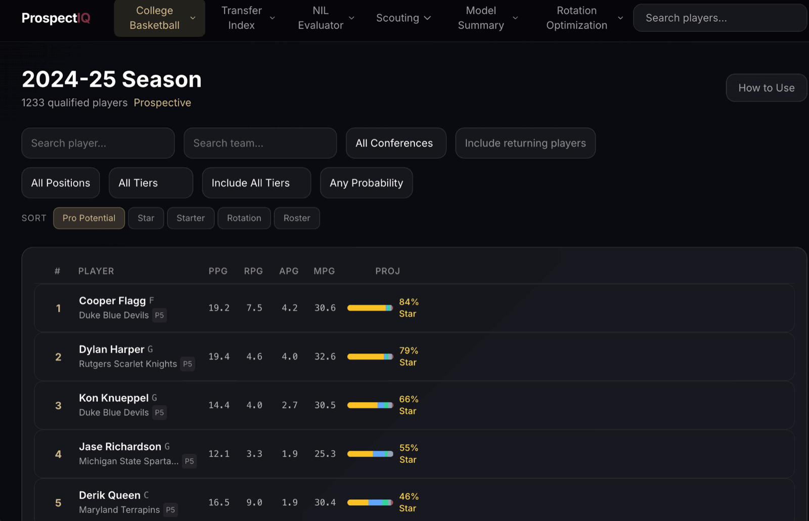
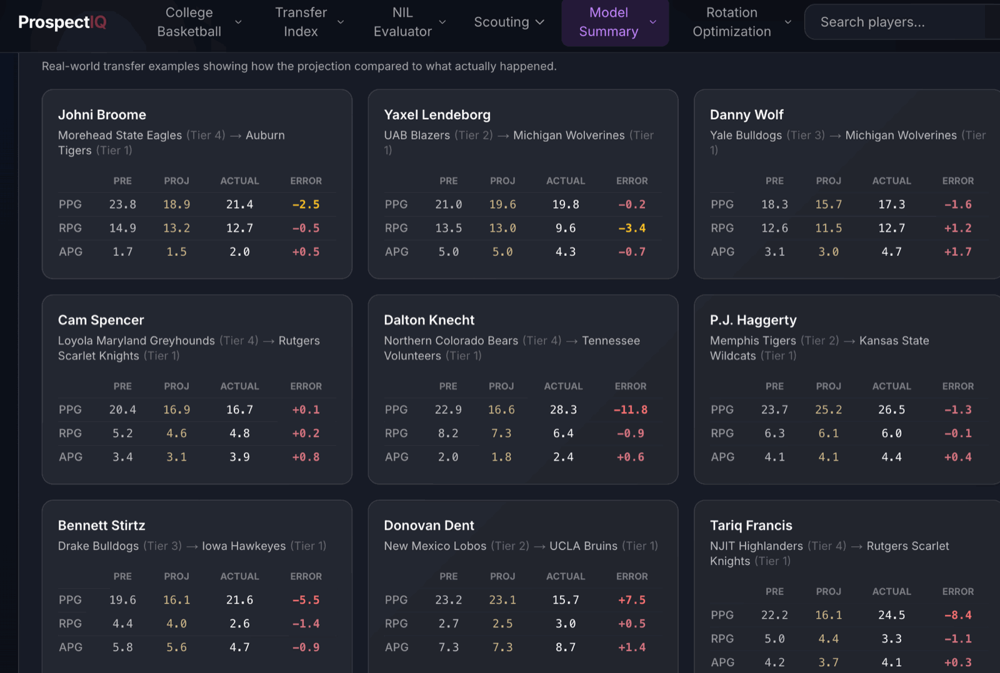
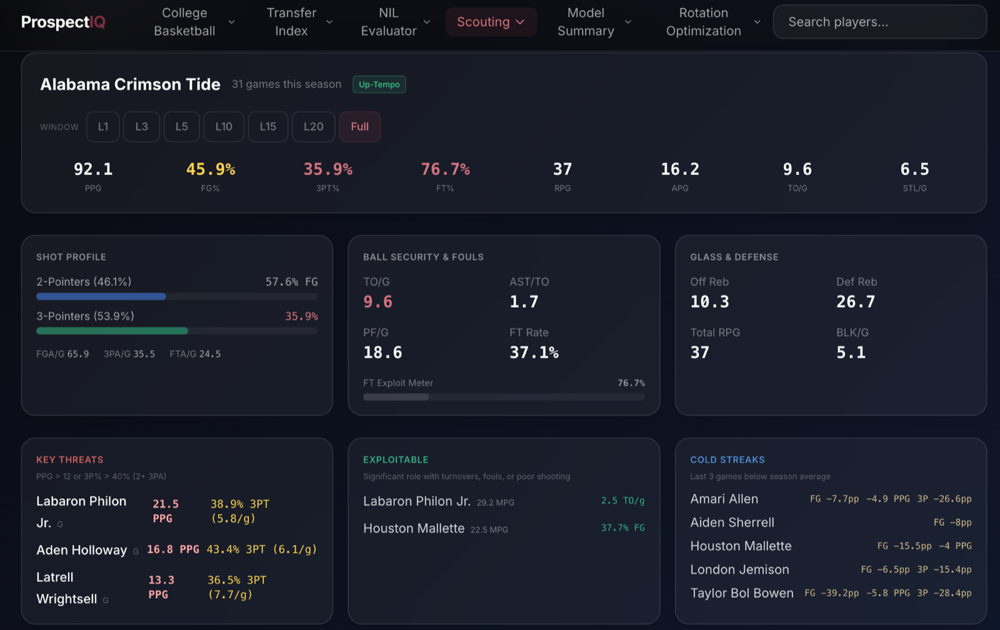
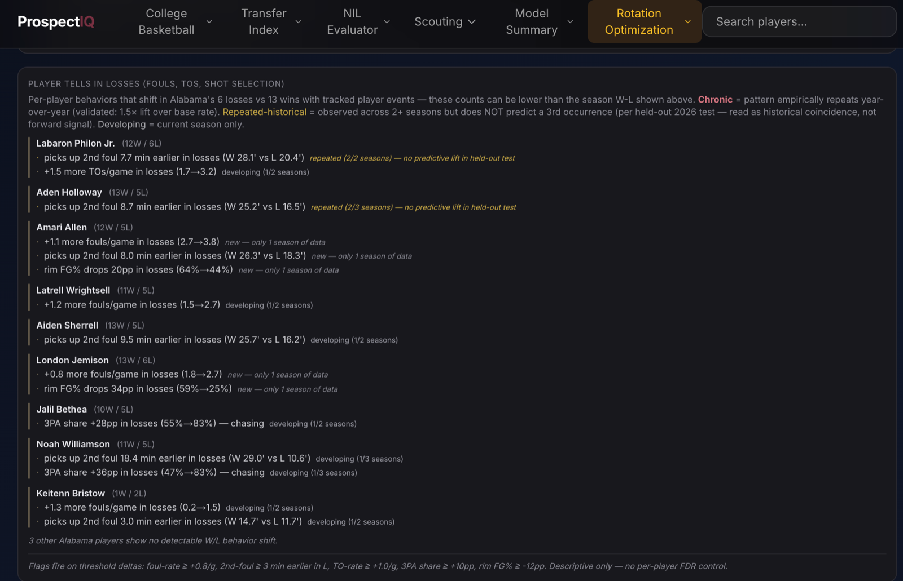

Projects/ProspectIQ
ProspectIQ
One deployed platform, four scouting products, each on its own engine: college player rankings trained on 147,000+ player-seasons, transfer portal projections from the Excel-fit transfer index, scouting reports and coaching tendencies built on CBBD play-by-play, and production-based NIL valuation. The transfer portal is asset mispricing in disguise, handled with calibrated projection models, because an undervalued-player list is only useful if its probabilities can be trusted.
ProspectIQ is four scouting products sharing one database, API, and frontend. The flagship is the college ranking model: XGBoost trained on 147,000+ college player-seasons produces a calibrated probability that a player reaches a rotation-level NBA career and a five-tier classification, with SHAP turning every projection into scouting language. Around it, the transfer index carries its own Excel-fit engine, the scouting surface builds team reports and coaching tendencies from CBBD play-by-play, and the NIL evaluator allocates conference-scaled budgets by production. A similarity engine over 54,000+ player-seasons ties the products together.
Which college players are worth a roster spot, a portal offer, or an NIL dollar, and why?
Four products, one answer each. Calibrated five-tier career projections rank every college player-season, the transfer index projects how production moves between programs, the scouting layer turns play-by-play into team reports and coaching tendencies, and the NIL evaluator distributes conference-scaled budgets by production.
A college program's decision surface is wider than any one model: who to recruit and keep, who to target when thousands of players enter the portal every year, how to prepare for the next opponent, and how to spend an NIL budget that now carries real money. Human scouting cannot cover that surface uniformly. The need is one system that ranks the full college population consistently, projects portal moves with probabilities that can be trusted, turns raw game data into coach-readable reports, ties NIL spending to production, and explains itself well enough that a scout can argue with it.
- College player rankings. XGBoost stick and tier models trained on 147,000+ college player-seasons, calibrated and SHAP-explained: a draft board, season rankings, and full player pages with shot charts.
- Transfer Index. The Excel-born two-stage Solver model, serialized into the API: portal projections with role scenarios and a transfer finder, backtested on 3,110 historical transfers.
- Scouting reports and coaching tendencies. Its own engine built on CBBD data: team reports from game logs, play-by-play metrics, and shot charts, plus coach-readable substitution tendencies.
- NIL evaluation. A production-based allocator: a per-player production value index distributes conference-scaled budgets across a roster.
Two source APIs disagree about almost everything, starting with what a season is called, and reconciliation is its own layer: dedicated season-offset utilities align the two conventions, and player identity is resolved across sources before any join. Quality floors keep noise out of training (10+ games and 8+ minutes per game to train on a season, 14+ minutes to appear in the ranked output), advanced stats stay missing where no source match exists because XGBoost handles missing values natively and imputation would invent signal, and listed heights and weights fall back to the position median where a roster listing is absent, so the model leans on size where it is known and stays neutral where it is not.
The evaluation design assumes the model will try to cheat and removes its opportunities. The split is by era rather than by random folds, training through 2018, calibrating on 2019 to 2021, testing on 2022 and later, because random folds would let the model grade seasons it had already seen and the college game drifts; the tier metrics are graded on the 2022-and-later test seasons, and the draft-class check grades boards that postdate the training window. Class imbalance is handled with SMOTE strictly inside cross-validation folds, so no synthetic player ever reaches an evaluation fold. Features are earned rather than assumed: LASSO cuts roughly 210 candidates down to a final 66 features spanning box score production, peak metrics, shot profiles, recruiting pedigree, and conference context. And calibration is a first-class step, isotonic regression blended 70/30 with the raw output, because a transfer target list is a decision tool and a printed probability has to be worth taking literally.
A ranking on the board is the end of a pipeline, not a lookup. Reconciled sources pass quality floors, era-split training produces the stick and tier models, isotonic calibration adjusts the probabilities so they can be read literally, and precomputed predictions seed the database the product serves:
The college model's three headline numbers are earned three different ways, and each is labeled with its provenance:
- Binary stick model: 5-fold cross-validation. ROC-AUC 0.685, plus or minus 0.037, on the production population. This is a cross-validated number, not a holdout number, and it is labeled as such wherever it appears.
- Tier model: era holdout. Trained through 2018, calibrated on 2019 to 2021, graded on 811 players from the 2022-and-later test seasons: 32.3% exact accuracy against a 20% random baseline, 70.2% within one tier. SMOTE stays confined to training folds, so no synthetic player reaches an evaluation fold.
- Draft-class test: out of time. Of the board's top-5 names in the 2020-25 draft classes, all of which postdate the training window, 25 of 30 (83%) became first-round picks; the rate is 91.7% across all draft classes.
- Calibration, published with its noise. Predicted-probability buckets track actual stick rates tightly at both ends: under 10% predicted, 0.5% stuck; over 90% predicted, 94.3% stuck. The sparse middle wobbles, including an out-of-order 30-to-40% bucket holding 290 of 96,387 scored players, and the wobble is reported rather than smoothed away.
- Transfer index: five-season backtest. 3,110 historical transfers, and a held-out check that drops every transfer the Solver saw during fitting lands within a point of the full backtest; the one stat that fails its baseline (blocks) is documented rather than hidden.
These designs establish predictive performance against stated baselines. They do not establish that the models capture defense, which box scores cannot see, and the ranked outputs remain probabilistic estimates rather than verdicts on individual players.
These numbers belong to the college career model alone: the XGBoost stick and tier models trained on the full college player-season history.

The transfer projections began life outside ProspectIQ as the Basketball Transfer Index, a neural-network-inspired framework built entirely in Excel: layered weights fit by an optimizer, with Solver standing in for backpropagation. That was a deliberate choice, not a limitation. The audience is coaching staffs who need to see why a projection says what it says, so every weight, multiplier, error cell, and intermediate step is inspectable on the sheet, and four model iterations are preserved side by side in the workbook. Nothing hides in a black box, and nothing can be invented: a projection can only come from cells you can point at.
The architecture is a two-stage model fit with Excel Solver (GRG Nonlinear) against the sum of absolute errors, with no backpropagation anywhere. Stage one fits per-stat lookup tables for three contexts of a transfer: the change in conference tier, the change in team rank (nine buckets), and the move between team playing styles. Stage two blends those three predictions per stat with three non-negative weights constrained to sum to one. The learned weights are themselves scouting insight: scoring translation leans almost entirely on the conference-tier jump (0.87), while assists (0.83) and blocks (0.99) are driven by the style of team a player lands on. In machine learning terms it is stacked generalization, three base learners under a constrained meta-learner per stat, fit gradient-free on 745 real transfers.
The team styles behind the third predictor come from a hand-built cluster analysis: 2,501 team-seasons z-scored on pace, activity, assist-to-turnover ratio, and shot selection, threshold-coded, then manually consolidated into six playing styles that feed a six-by-six style-transition matrix. The system was later serialized into ProspectIQ's transfer API and backtested there on 3,110 historical transfers across five seasons: scoring projections land within 3.11 points per 40 on average, call the direction of change correctly 66.4% of the time, and beat the no-change baseline by 12.2%. That headline is scoring-specific: across all ten projected stats the average improvement is 5.6%, turnovers and usage also beat the baseline clearly, assists and steals sit essentially on it, and blocks fail it, documented as a known issue rather than hidden. A held-out check that drops every transfer the Solver saw during fitting lands within a point of those numbers (13.0% over naive, 67.1% direction), so the backtest does not lean on its training rows.
These numbers belong to the transfer index alone: fit in the workbook, then backtested after serialization into the API.

The scouting layer is its own build on CollegeBasketballData feeds, not a view of the projection model. Team reports assemble game logs, rolling form, shot charts classified into court zones, and per-player breakdowns from play-by-play, and a game-analysis view reconstructs score timelines, runs, and assist networks. The coaching-tendencies engine reads substitution behavior out of play-by-play, and every tendency it reports is a specific observed pattern, starting with when a coach makes the first sub, written to be read by a coach rather than a data scientist.


The NIL layer treats valuation as a budget-distribution problem rather than a price guess. Every player carries a production value index computed from their stat profile, team budgets are scaled to conference strength, and the budget is distributed across the roster in proportion to production, with escalation for class year and trajectory. The output is a defensible starting point for an NIL conversation: where a roster's production actually sits, and how a budget should tilt in response.
- Provenance-labeled evaluation. Tier accuracy and the draft-class check are graded out of era: train through 2018, calibrate on 2019 to 2021, test on 2022 and later. The binary AUC is labeled as cross-validation rather than holdout, because the two claims are not the same.
- Calibrated probabilities, not raw scores. Isotonic regression blended with the raw model output. The curve is tight at the confident ends, where recruiting decisions actually get made, and its sparse middle is published rather than smoothed.
- Explainable to a scout. SHAP values on every projection turn "the model likes him" into which specific parts of the profile carry the projection.
- Built as a product. 36 frontend pages, 14 API routers, transfer portal and NIL tooling, a similarity engine over 54,000+ player-seasons, and reproducible validation notebooks behind every methodology claim.
The calibrated probabilities are the product, and they can be read literally where it counts: players scored under 10% stuck 0.5% of the time, players scored over 90% stuck 94.3% of the time, and the sparse middle buckets are published with their noise. The strongest evidence sits at the top of the board, where 25 of the 30 top-5 names across the 2020-25 draft classes became first-round picks. The transfer projections beat carrying a player's numbers forward unchanged by a modest, measured margin, so they are an aid for pricing portal moves rather than a promise about any individual transfer, and SHAP keeps every projection arguable by a scout. The scouting and NIL layers extend the same standard: outputs a coach can inspect, with the method visible.
The limitations that matter for interpretation:
- Severe class imbalance: almost all college players never reach the NBA. SMOTE inside cross-validation folds addresses training balance without contaminating evaluation.
- Era drift: pace, three-point volume, and portal movement have changed the college game, which is exactly why evaluation splits by era rather than randomly.
- Cross-source identity and season alignment: reconciling two APIs' conventions for the same player-season required dedicated utilities and defensive checks.
Serving is separated from modeling: predictions are precomputed to Parquet and seeded into PostgreSQL, so the async FastAPI layer answers dashboard queries without a model in the request path. The frontend is a 36-page Next.js application deployed on Vercel, with the API and database on Render.
Technical deep dive
Technical highlights
- Two models, two jobs: a binary XGBoost model predicts which players stick as NBA rotation players or better (5-fold CV ROC-AUC 0.685), and a five-class softprob model assigns career tiers at 70.2% adjacent accuracy out of era. The same architecture scores 0.92 on the far easier all-players question of merely reaching the NBA; this page deliberately headlines the harder number, because the easy question is one nobody pays for.
- Two data sources with different season conventions (Ball Don't Lie and CollegeBasketballData) are aligned through dedicated season-offset utilities, one of the unglamorous correctness problems that decides whether everything downstream is right.
- Transfer portal projections carry the Excel-born two-stage Solver fit into production: the workbook's fitted tables and blend weights are serialized into the API, with role scenarios for how a player projects at a new school and a methodology note documenting the full lineage.
- A player similarity engine ranks comparables by weighted distance in z-scored stat space across 54,000+ qualified player-seasons.
- The scouting and NIL layers run as their own engines on the shared core: team reports, shot charts, and substitution tendencies computed from CBBD play-by-play, and a production-value allocator that scales NIL budgets to conference strength.
- An audit script verifies the full system, and nine validation notebooks make the methodology reproducible end to end.
Key engineering decisions
- Why XGBoost?
- Tabular data with heterogeneous, interacting features is where gradient boosting is strongest, and it pairs naturally with SHAP for per-player explanations.
- Why calibration as a first-class step?
- A transfer target list is a decision tool, so a printed probability has to be worth taking literally. Isotonic regression fit on a held-out era, blended 70/30 with the raw output, keeps the curve reliable at the confident ends without overfitting its sparse middle.
- Why adjacent-tier accuracy as the headline metric?
- The boundary between Starter and Star is partly semantic; the boundary between Starter and Out is not. Adjacent accuracy measures the errors that matter for a five-class problem with fuzzy edges.
- Why async SQLAlchemy with asyncpg?
- The API is read-heavy with many concurrent dashboard queries, which is exactly the workload async serving exists for.
- Why precompute predictions instead of serving the model?
- Predictions change when models retrain, not per request. Precomputing to Parquet and seeding PostgreSQL keeps the request path fast and the model version pinned and auditable.
Future improvements
Defensive and tracking data would address the box score's biggest blind spot. Live in-season updates would keep rankings current through the portal windows, and projecting who enters the portal before they do would extend the undervalued-target pipeline.
Technology stack
Data: Ball Don't Lie API and CollegeBasketballData.com API. Validation notebooks and a system audit script accompany the codebase. The deployed application is password protected; access is available by email.